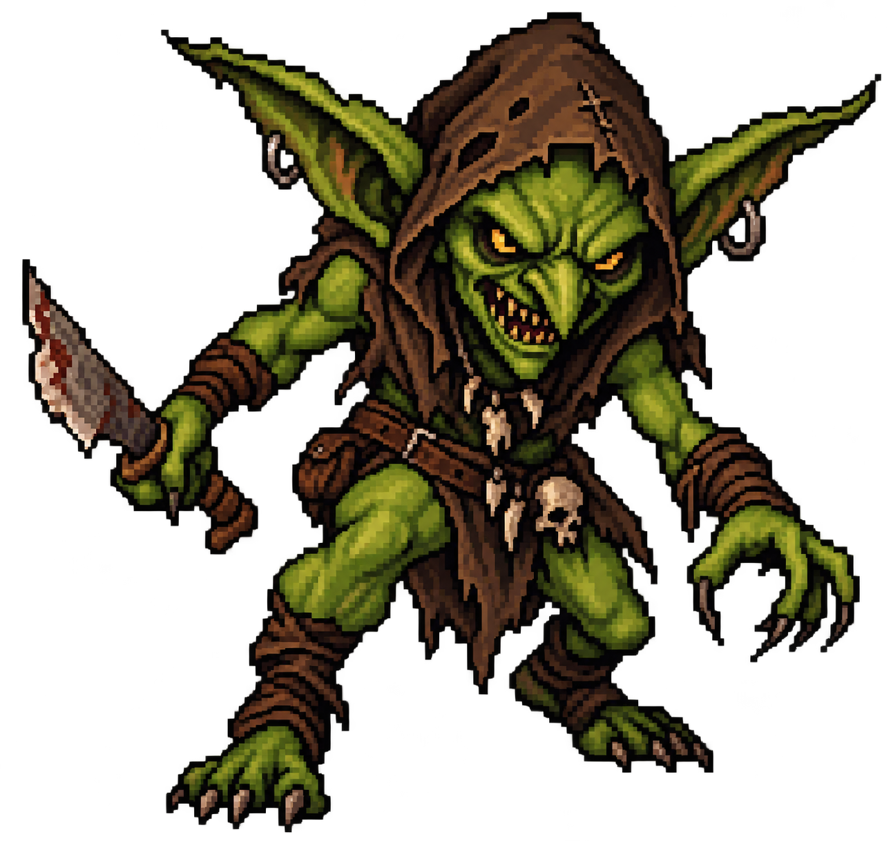
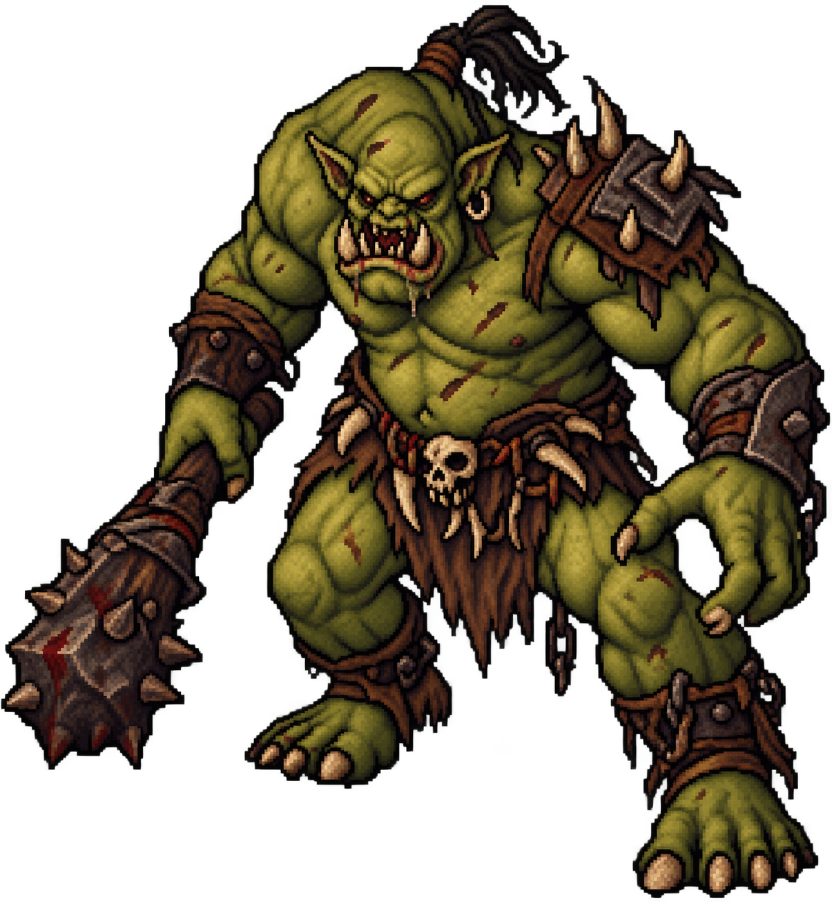
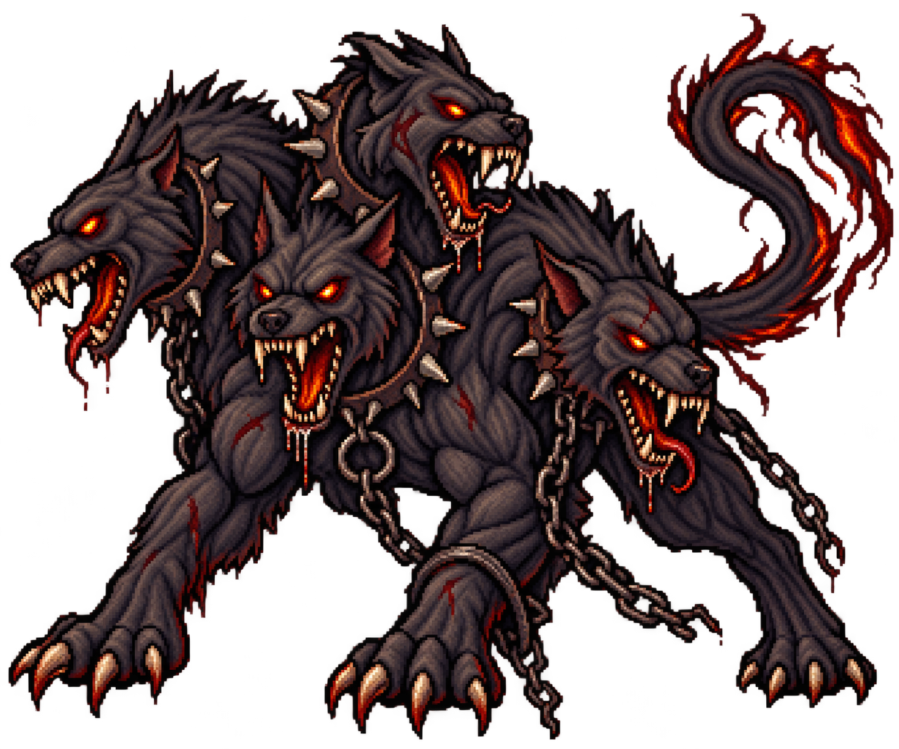
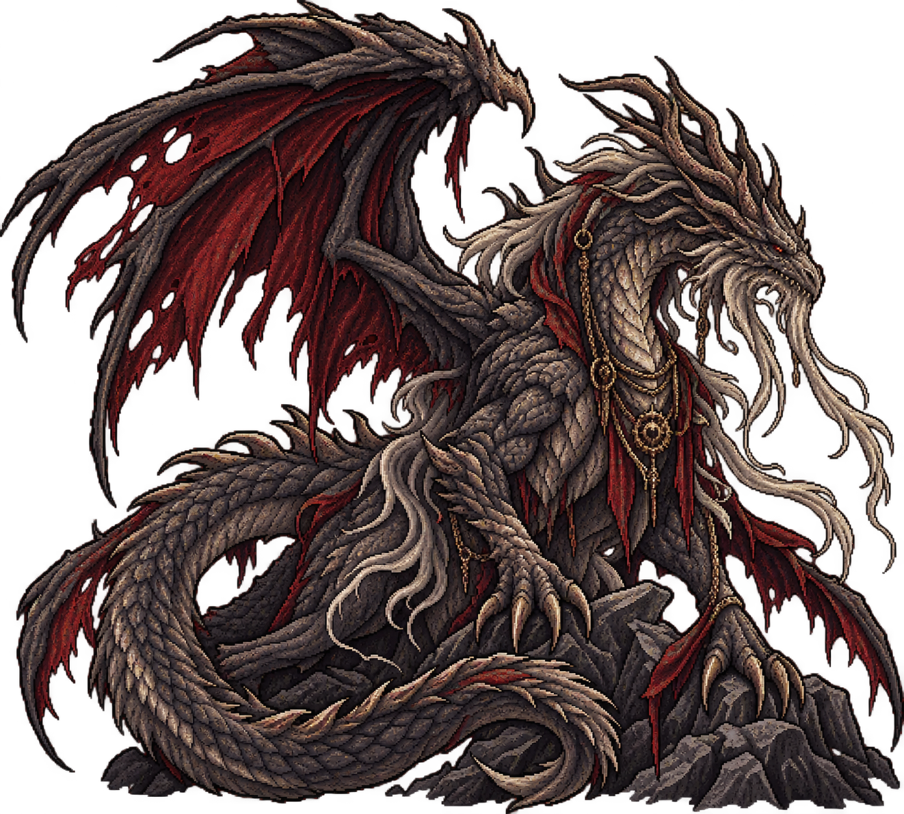

Criaturas
Las criaturas de Aetheria habitan tanto las regiones salvajes como zonas cercanas a los asentamientos. Algunas son territoriales y agresivas, mientras que otras simplemente reaccionan ante quienes invaden su hábitat.
El Gremio de Cazadores clasifica a las criaturas según su peligrosidad y establece qué rango de cazador puede enfrentarlas. Al ser derrotadas, las criaturas pueden proporcionar Cristales Vitales y distintos materiales.
Goblin
Rango - Hierro
Cristales Vitales: 2 - 5

Los goblins son criaturas pequeñas que habitan principalmente en bosques,
cuevas y zonas alejadas de los asentamientos. Suelen desplazarse en grupos y
aprovechar su número para atacar a viajeros o pequeños comerciantes.
Aunque individualmente no representan una gran amenaza para un cazador entrenado,
pueden resultar peligrosos cuando aparecen en grandes cantidades.
Son una de las criaturas más comunes de Aetheria y, por lo tanto, sus Cristales Vitales
poseen un valor relativamente bajo.
Hábitat: Bosques, cuevas y ruinas.
Comportamiento: Territorial y gregario.
Ogro
Rango - Bronce
Cristales Vitales: 15 - 30

Los ogros son criaturas humanoides de gran tamaño y fuerza física. Suelen habitar zonas
montañosas, bosques profundos y territorios alejados de la población.
Son generalmente solitarios y extremadamente territoriales. Son considerados criaturas tontas
pero, aun así, debido a su fuerza y que son dificiles de matar, un ogro puede representar una
amenaza considerable para viajeros y pequeños asentamientos.
Debido a su gran tamaño y fuerza, poseen una concentración de Cristal Vital considerablemente
mayor que la de criaturas menores.
Hábitat: Montañas, bosques y cavernas.
Comportamiento: Territorial y agresivo.
Wyvern
Rango - Plata
Cristales Vitales: 50 - 100

Los wyverns son grandes criaturas voladoras de dos patas y dos alas. Su capacidad para
desplazarse por el aire las convierte en depredadores extremadamente peligrosos.
Suelen establecer sus nidos en lugares elevados, como montañas, acantilados y grandes
torres naturales. Atacan desde el aire y pueden recorrer grandes distancias en busca de
alimento.
Sus Cristales Vitales son muy valorados debido a la cantidad de energía vital que
acumulan estas criaturas.
Hábitat: Montañas, acantilados y zonas elevadas.
Comportamiento: Territorial y depredador.
Cerbero
Rango - Oro
Cristales Vitales: 150 - 300

El Cerbero es una criatura extremadamente rara y peligrosa. Se caracteriza por poseer
tres cabezas y un cuerpo de enormes dimensiones. Las distintas tradiciones mitológicas
han descrito al Cerbero de formas diferentes, aunque la representación de tres cabezas
es la más extendida.
En Aetheria, los Cerberos son criaturas solitarias que habitan regiones extremadamente
peligrosas. Su fuerza, resistencia y capacidad de atacar simultáneamente desde diferentes
direcciones hacen que enfrentarlos requiera cazadores de alto rango.
Sus Cristales Vitales son extremadamente valiosos y constituyen uno de los recursos
más apreciados por el Gremio.
Hábitat: Regiones profundas y territorios aislados.
Comportamiento: Extremadamente territorial.
Dragón Anciano
Rango - Diamante
Cristales Vitales: 500 - 1000

Los Dragones Ancianos son considerados algunas de las criaturas más poderosas conocidas
en Aetheria. Han sobrevivido durante siglos y han acumulado una enorme cantidad de Cristal
Vital a lo largo de sus vidas.
Su inteligencia, fuerza y capacidades sobrenaturales los convierten en amenazas capaces de
destruir asentamientos enteros. Por este motivo, los contratos relacionados con un Dragón
Anciano solamente pueden ser aceptados por cazadores autorizados de Rango Diamante.